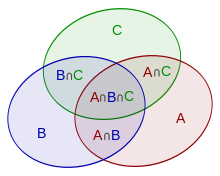

ইনক্লুশন-এক্সক্লুশন নীতি¶
ইনক্লুশন-এক্সক্লুশন নীতি হলো একটি গুরুত্বপূর্ণ কম্বিনেটরিক্স পদ্ধতি যা একটি সেটের আকার বা জটিল ঘটনার সম্ভাব্যতা গণনা করতে ব্যবহৃত হয়। এটি পৃথক সেটগুলোর আকারকে তাদের ইউনিয়নের সাথে সম্পর্কিত করে।
বিবৃতি¶
মৌখিক সূত্র¶
ইনক্লুশন-এক্সক্লুশন নীতিটি নিম্নলিখিতভাবে প্রকাশ করা যায়:
একাধিক সেটের ইউনিয়নের আকার গণনা করতে, প্রথমে এই সেটগুলোর আকার আলাদাভাবে যোগ করতে হবে, তারপর সেটগুলোর সব জোড়া ছেদের আকার বাদ দিতে হবে, তারপর তিনটি সেটের ছেদের আকার যোগ করতে হবে, চারটি সেটের আকার বাদ দিতে হবে, এবং এভাবে সব সেটের ছেদ পর্যন্ত চলতে হবে।
সেট তত্ত্বের ভাষায় সূত্রায়ণ¶
উপরের সংজ্ঞাটি গাণিতিকভাবে নিম্নলিখিতভাবে প্রকাশ করা যায়:
এবং আরও সংক্ষিপ্তভাবে:
ভেন ডায়াগ্রাম ব্যবহার করে সূত্রায়ণ¶
ধরুন ডায়াগ্রামে তিনটি সেট $A$, $B$ এবং $C$ দেখানো হয়েছে:

তাহলে তাদের ইউনিয়ন $A \cup B \cup C$-এর ক্ষেত্রফল $A$, $B$ এবং $C$-এর ক্ষেত্রফলের যোগফলের সমান, যেখান থেকে দুইবার ঢাকা ক্ষেত্র $A \cap B$, $A \cap C$, $B \cap C$ বাদ দেওয়া হয়, কিন্তু তিনটি সেট দ্বারা ঢাকা ক্ষেত্র $A \cap B \cap C$ যোগ করা হয়:
এটি $n$টি সেটের সংযোগের জন্যও সাধারণীকরণ করা যায়।
সম্ভাব্যতা তত্ত্বের ভাষায় সূত্রায়ণ¶
যদি $A_i$ $(i = 1,2...n)$ ঘটনা হয় এবং ${\cal P}(A_i)$ $A_i$ থেকে একটি ঘটনা ঘটার সম্ভাব্যতা হয়, তাহলে তাদের ইউনিয়নের সম্ভাব্যতা (অর্থাৎ অন্তত একটি ঘটনা ঘটার সম্ভাব্যতা) সমান:
এবং আরও সংক্ষিপ্তভাবে:
প্রমাণ¶
প্রমাণের জন্য সেট তত্ত্বের গাণিতিক সূত্রায়ণ ব্যবহার করা সুবিধাজনক:
আমরা প্রমাণ করতে চাই যে অন্তত একটি সেট $A_i$-তে থাকা যেকোনো উপাদান সূত্রে শুধুমাত্র একবার গণনা করা হবে (লক্ষ্য করুন যে কোনো $A_i$ সেটে নেই এমন উপাদানগুলো সূত্রের ডান পাশে কখনোই বিবেচনা করা হবে না)।
ধরি একটি উপাদান $x$ $k \geq 1$টি সেট $A_i$-তে আছে। আমরা দেখাব এটি সূত্রে শুধুমাত্র একবার গণনা করা হয়। লক্ষ্য করুন:
- যেসব পদে $|J| = 1$, সেখানে $x$ $+\ k$ বার গণনা করা হবে;
- যেসব পদে $|J| = 2$, সেখানে $x$ $-\ \binom{k}{2}$ বার গণনা করা হবে — কারণ $x$ ধারণকারী $k$টি সেটের মধ্যে দুটি অন্তর্ভুক্ত এমন পদগুলোতে এটি গণনা করা হবে;
- যেসব পদে $|J| = 3$, সেখানে $x$ $+\ \binom{k}{3}$ বার গণনা করা হবে;
- $\cdots$
- যেসব পদে $|J| = k$, সেখানে $x$ $(-1)^{k-1}\cdot \binom{k}{k}$ বার গণনা করা হবে;
- যেসব পদে $|J| \gt k$, সেখানে $x$ শূন্য বার গণনা করা হবে;
এটি আমাদের দ্বিপদী সহগ-এর নিম্নলিখিত যোগফলে নিয়ে যায়:
এই রাশিটি $(1 - x)^k$-এর দ্বিপদী বিস্তারের সাথে খুব সাদৃশ্যপূর্ণ:
যখন $x = 1$, $(1 - x)^k$ দেখতে $T$-এর মতো। তবে রাশিটিতে একটি অতিরিক্ত $\binom{k}{0} = 1$ আছে এবং এটি $-1$ দ্বারা গুণিত। এতে পাওয়া যায় $(1 - 1)^k = 1 - T$। অতএব $T = 1 - (1 - 1)^k = 1$, যা প্রমাণ করতে হয়েছিল। উপাদানটি শুধুমাত্র একবার গণনা করা হয়।
ঠিক $r$টি সেটে উপাদানের সংখ্যা গণনার জন্য সাধারণীকরণ¶
ইনক্লুশন-এক্সক্লুশন নীতি পুনরায় লেখা যায় শূন্যটি সেটে থাকা উপাদানের সংখ্যা গণনা করতে:
এর সাধারণীকরণ বিবেচনা করুন ঠিক $r$টি সেটে থাকা উপাদানের সংখ্যা গণনা করতে:
এই সূত্রটি প্রমাণ করতে, একটি নির্দিষ্ট $B$ বিবেচনা করুন। মৌলিক ইনক্লুশন-এক্সক্লুশন নীতি অনুসারে এটি সম্পর্কে বলা যায়:
বাম পাশের সেটগুলো বিভিন্ন $B$-এর জন্য ছেদ করে না, তাই আমরা সরাসরি যোগ করতে পারি। এছাড়াও লক্ষ্য করুন যে যেকোনো সেট $X$ সবসময় $(-1)^{m-r}$ সহগ পাবে যদি এটি উপস্থিত হয় এবং এটি ঠিক $\dbinom{m}{r}$টি সেট $B$-এর জন্য উপস্থিত হবে।
সমস্যা সমাধানে ব্যবহার¶
ইনক্লুশন-এক্সক্লুশন নীতি এর প্রয়োগ অধ্যয়ন না করে বোঝা কঠিন।
প্রথমে, আমরা নীতির প্রয়োগ চিত্রিত করে তিনটি সরলতম "কাগজে" সমস্যা দেখব, তারপর আরও ব্যবহারিক সমস্যা বিবেচনা করব যেগুলো ইনক্লুশন-এক্সক্লুশন নীতি ছাড়া সমাধান করা কঠিন।
"উপায়ের সংখ্যা বের করো" ধরনের সমস্যাগুলো উল্লেখযোগ্য, কারণ এগুলো কখনো কখনো বহুপদী সমাধানে নিয়ে যায়, অগত্যা সূচকীয় নয়।
পারমুটেশনের একটি সরল সমস্যা¶
সমস্যা: $0$ থেকে $9$ পর্যন্ত সংখ্যার কতগুলো পারমুটেশন আছে যেখানে প্রথম উপাদান $1$-এর বেশি এবং শেষটি $8$-এর কম।
"খারাপ" পারমুটেশনের সংখ্যা গুনি, অর্থাৎ এমন পারমুটেশন যেখানে প্রথম উপাদান $\leq 1$ এবং/অথবা শেষটি $\geq 8$।
$X$ দ্বারা সেই পারমুটেশনের সেট চিহ্নিত করি যেখানে প্রথম উপাদান $\leq 1$ এবং $Y$ দ্বারা সেই সেট যেখানে শেষ উপাদান $\geq 8$। তাহলে ইনক্লুশন-এক্সক্লুশন সূত্র অনুসারে "খারাপ" পারমুটেশনের সংখ্যা:
সরল কম্বিনেটরিক্স গণনার পর, আমরা পাই:
"ভালো" পারমুটেশনের সংখ্যা পেতে এই সংখ্যাটি মোট $10!$ থেকে বাদ দিতে হবে।
(০, ১, ২) সিকোয়েন্সের একটি সরল সমস্যা¶
সমস্যা: দৈর্ঘ্য $n$-এর কতগুলো সিকোয়েন্স আছে যা শুধু $0,1,2$ সংখ্যা নিয়ে গঠিত এবং প্রতিটি সংখ্যা অন্তত একবার আছে।
আবার বিপরীত সমস্যায় যাই, অর্থাৎ এমন সিকোয়েন্সের সংখ্যা গণনা করি যেগুলোতে অন্তত একটি সংখ্যা নেই।
$A_i (i = 0,1,2)$ দ্বারা সেই সিকোয়েন্সের সেট চিহ্নিত করি যেখানে অঙ্ক $i$ নেই। "খারাপ" সিকোয়েন্সের সংখ্যার জন্য ইনক্লুশন-এক্সক্লুশন সূত্র:
- প্রতিটি $A_i$-এর আকার $2^n$, কারণ প্রতিটি সিকোয়েন্সে শুধু দুটি অঙ্ক থাকতে পারে।
- প্রতিটি জোড়া ছেদ $A_i \cap A_j$-এর আকার $1$, কারণ সিকোয়েন্স তৈরি করতে শুধু একটি অঙ্ক থাকবে।
- তিনটি সেটের ছেদের আকার $0$, কারণ সিকোয়েন্স তৈরি করতে কোনো অঙ্ক থাকবে না।
যেহেতু আমরা বিপরীত সমস্যা সমাধান করেছি, মোট $3^n$ সিকোয়েন্স থেকে বাদ দিই:
ঊর্ধ্ব-সীমা যুক্ত পূর্ণসংখ্যা যোগফলের সংখ্যা¶
নিম্নলিখিত সমীকরণ বিবেচনা করুন:
যেখানে $0 \le x_i \le 8 ~ (i = 1,2,\ldots 6)$।
সমস্যা: সমীকরণের সমাধানের সংখ্যা গণনা করুন।
$x_i$-এর সীমাবদ্ধতা মুহূর্তের জন্য ভুলে যান এবং শুধু এই সমীকরণের অ-ঋণাত্মক সমাধানের সংখ্যা গুনুন। এটি স্টার্স অ্যান্ড বার্স ব্যবহার করে সহজেই করা যায়: আমরা $20$টি ইউনিটের একটি ক্রমকে $6$টি গ্রুপে ভাঙতে চাই, যা $5$টি বার এবং $20$টি স্টার সাজানোর সমান:
এখন ইনক্লুশন-এক্সক্লুশন নীতি দিয়ে "খারাপ" সমাধানের সংখ্যা গণনা করব। "খারাপ" সমাধান হলো সেগুলো যেখানে এক বা একাধিক $x_i$ $9$-এর বেশি বা সমান।
$A_k ~ (k = 1,2\ldots 6)$ দ্বারা সেই সমাধানের সেট চিহ্নিত করি যেখানে $x_k \ge 9$, এবং অন্য সব $x_i \ge 0 ~ (i \ne k)$ (তারা $\ge 9$ হতেও পারে বা নাও পারে)। $A_k$-এর আকার গণনা করতে লক্ষ্য করুন, মূলত আমাদের আগের দুই অনুচ্ছেদে সমাধান করা একই কম্বিনেটরিক্স সমস্যা, কিন্তু এখন $9$টি ইউনিট স্লট থেকে বাদ দেওয়া হয়েছে এবং নিশ্চিতভাবে প্রথম গ্রুপে যাবে। তাই:
একইভাবে, দুটি সেট $A_k$ এবং $A_p$ ($k \ne p$-এর জন্য)-এর ছেদের আকার:
তিনটি সেটের প্রতিটি ছেদের আকার শূন্য, কারণ $20$টি ইউনিট তিন বা তার বেশি চলকের জন্য $9$-এর বেশি বা সমান হতে যথেষ্ট নয়।
ইনক্লুশন-এক্সক্লুশনের সূত্রে সব একত্রিত করে এবং যেহেতু আমরা বিপরীত সমস্যা সমাধান করেছি, অবশেষে উত্তর পাই:
এটি সহজেই সাধারণীকরণ করা যায় $d$টি সংখ্যার জন্য যাদের যোগফল $s$ এবং সীমাবদ্ধতা $0 \le x_i \le b$:
উপরের মতো, ঋণাত্মক উপরের ইনডেক্স বিশিষ্ট দ্বিপদী সহগকে শূন্য হিসেবে গণ্য করি।
লক্ষ্য করুন এই সমস্যাটি ডায়নামিক প্রোগ্রামিং বা জেনারেটিং ফাংশন দিয়েও সমাধান করা যেত। ইনক্লুশন-এক্সক্লুশন উত্তর $O(d)$ সময়ে গণনা করা হয় (ধরে নিই দ্বিপদী সহগের মতো গাণিতিক অপারেশন ধ্রুব সময়ের), যেখানে একটি সরল ডিপি পদ্ধতিতে $O(ds)$ সময় লাগবে।
একটি প্রদত্ত ব্যবধানে সহমৌলিক সংখ্যার পরিমাণ¶
সমস্যা: দুটি সংখ্যা $n$ এবং $r$ দেওয়া আছে, $[1;r]$ ব্যবধানে $n$-এর সাথে সহমৌলিক (যাদের গসাগু $1$) পূর্ণসংখ্যার সংখ্যা গণনা করুন।
বিপরীত সমস্যা সমাধান করি — $n$-এর সাথে সহমৌলিক নয় এমন সংখ্যা গণনা করি।
$n$-এর মৌলিক গুণনীয়কগুলোকে $p_i (i = 1\cdots k)$ দ্বারা চিহ্নিত করি।
$[1;r]$ ব্যবধানে কতগুলো সংখ্যা $p_i$ দ্বারা বিভাজ্য? এই প্রশ্নের উত্তর:
তবে, আমরা যদি এই সংখ্যাগুলো সরাসরি যোগ করি, কিছু সংখ্যা একাধিকবার গণনা করা হবে (যেগুলোর একাধিক $p_i$ গুণনীয়ক আছে)। তাই ইনক্লুশন-এক্সক্লুশন নীতি ব্যবহার করা প্রয়োজন।
আমরা $p_i$-দের সব $2^k$ সাবসেটের উপর ইটারেট করব, তাদের গুণফল গণনা করব এবং তাদের গুণফলের গুণিতকের সংখ্যা যোগ বা বিয়োগ করব।
এখানে একটি C++ ইমপ্লিমেন্টেশন:
int solve (int n, int r) {
vector<int> p;
for (int i=2; i*i<=n; ++i)
if (n % i == 0) {
p.push_back (i);
while (n % i == 0)
n /= i;
}
if (n > 1)
p.push_back (n);
int sum = 0;
for (int msk=1; msk<(1<<p.size()); ++msk) {
int mult = 1,
bits = 0;
for (int i=0; i<(int)p.size(); ++i)
if (msk & (1<<i)) {
++bits;
mult *= p[i];
}
int cur = r / mult;
if (bits % 2 == 1)
sum += cur;
else
sum -= cur;
}
return r - sum;
}
সমাধানের কমপ্লেক্সিটি $O (\sqrt{n})$।
একটি প্রদত্ত ব্যবধানে প্রদত্ত সংখ্যাগুলোর অন্তত একটির গুণিতক পূর্ণসংখ্যার সংখ্যা¶
$n$টি সংখ্যা $a_i$ এবং সংখ্যা $r$ দেওয়া আছে। আপনি $[1; r]$ ব্যবধানে এমন পূর্ণসংখ্যার সংখ্যা গুনতে চান যেগুলো $a_i$-দের অন্তত একটির গুণিতক।
সমাধান অ্যালগরিদম আগের সমস্যার সাথে প্রায় অভিন্ন — $a_i$ সংখ্যাগুলোর উপর ইনক্লুশন-এক্সক্লুশনের সূত্র তৈরি করুন, অর্থাৎ এই সূত্রের প্রতিটি পদ হলো $a_i$ সংখ্যাগুলোর একটি প্রদত্ত সাবসেট দ্বারা বিভাজ্য সংখ্যার পরিমাণ (অন্যভাবে বললে, তাদের লসাগু দ্বারা বিভাজ্য)।
তাই আমরা পূর্ণসংখ্যা $a_i$-দের সব $2^n$ সাবসেটের উপর ইটারেট করব, $O(n \log r)$ অপারেশনে তাদের লসাগু বের করব এবং ব্যবধানে এর গুণিতকের সংখ্যা যোগ বা বিয়োগ করব। কমপ্লেক্সিটি $O (2^n\cdot n\cdot \log r)$।
একটি প্রদত্ত প্যাটার্ন মেনে চলা স্ট্রিংয়ের সংখ্যা¶
একই দৈর্ঘ্যের $n$টি স্ট্রিং প্যাটার্ন বিবেচনা করুন, যা শুধু অক্ষর ($a...z$) বা প্রশ্নচিহ্ন নিয়ে গঠিত। এছাড়াও একটি সংখ্যা $k$ দেওয়া আছে। একটি স্ট্রিং একটি প্যাটার্নের সাথে মেলে যদি এর দৈর্ঘ্য প্যাটার্নের সমান হয় এবং প্রতিটি অবস্থানে, হয় সংশ্লিষ্ট অক্ষরগুলো সমান অথবা প্যাটার্নের অক্ষরটি প্রশ্নচিহ্ন। কাজ হলো ঠিক $k$টি প্যাটার্নের সাথে মেলে (প্রথম সমস্যা) এবং অন্তত $k$টি প্যাটার্নের সাথে মেলে (দ্বিতীয় সমস্যা) এমন স্ট্রিংয়ের সংখ্যা গণনা করা।
প্রথমে লক্ষ্য করুন যে আমরা সহজেই নির্দিষ্ট সব প্যাটার্ন একসাথে মানা স্ট্রিংয়ের সংখ্যা গুনতে পারি। এর জন্য, সহজভাবে প্যাটার্নগুলো "ক্রস" করুন: অবস্থানগুলো ("স্লট") দিয়ে ইটারেট করুন এবং সব প্যাটার্নের একটি অবস্থান দেখুন। যদি সব প্যাটার্নে এই অবস্থানে প্রশ্নচিহ্ন থাকে, অক্ষরটি $a$ থেকে $z$ পর্যন্ত যেকোনো হতে পারে। অন্যথায়, এই অবস্থানের অক্ষরটি প্রশ্নচিহ্ন নেই এমন প্যাটার্নগুলো দ্বারা অনন্যভাবে নির্ধারিত।
এখন প্রথম সংস্করণের সমস্যা সমাধান করতে শিখি: যখন স্ট্রিংকে ঠিক $k$টি প্যাটার্ন মানতে হবে।
এটি সমাধান করতে, $k$টি প্যাটার্ন নিয়ে গঠিত প্যাটার্নের সেট থেকে একটি নির্দিষ্ট সাবসেট $X$ ইটারেট এবং ফিক্স করুন। তারপর আমাদের এই প্যাটার্নের সেট মানা স্ট্রিংয়ের সংখ্যা গুনতে হবে, এবং শুধু এটিই মানবে, অর্থাৎ অন্য কোনো প্যাটার্ন মানবে না। আমরা ইনক্লুশন-এক্সক্লুশন নীতি একটু ভিন্নভাবে ব্যবহার করব: $X$ ধারণকারী সব সুপারসেট $Y$-এর (মূল স্ট্রিংয়ের সেট থেকে সাবসেট) উপর যোগ করব এবং বর্তমান উত্তরে স্ট্রিংয়ের সংখ্যা যোগ বা বিয়োগ করব:
যেখানে $f(Y)$ হলো $Y$ মানা (অন্তত $Y$) স্ট্রিংয়ের সংখ্যা।
(এটি বুঝতে কষ্ট হলে ভেন ডায়াগ্রাম আঁকার চেষ্টা করুন।)
সব $ans(X)$ যোগ করলে চূড়ান্ত উত্তর পাওয়া যায়:
তবে, এই সমাধানের কমপ্লেক্সিটি $O(3^k \cdot k)$। উন্নত করতে, লক্ষ্য করুন বিভিন্ন $ans(X)$ গণনায় প্রায়ই $Y$ সেট শেয়ার হয়।
আমরা ইনক্লুশন-এক্সক্লুশনের সূত্র উল্টাব এবং $Y$ সেটের ভিত্তিতে যোগ করব। এখন স্পষ্ট হয় যে একই সেট $Y$, $ans(X)$-এর গণনায় $\binom{|Y|}{k}$টি সেটের জন্য একই চিহ্ন $(-1)^{|Y| - k}$ সহ বিবেচিত হবে।
এখন আমাদের সমাধানের কমপ্লেক্সিটি $O(2^k \cdot k)$।
এখন সমস্যার দ্বিতীয় সংস্করণ সমাধান করি: অন্তত $k$টি প্যাটার্ন মানা স্ট্রিংয়ের সংখ্যা বের করা।
অবশ্যই, আমরা প্রথম সংস্করণের সমাধান ব্যবহার করে $k$-এর চেয়ে বড় আকারের সেটের উত্তর যোগ করতে পারি। তবে, লক্ষ্য করুন এই সমস্যায়, একটি সেট |Y| সূত্রে $\ge k$ আকারের সব সেটের জন্য বিবেচিত হয় যেগুলো $Y$-তে অন্তর্ভুক্ত। তাই, $f(Y)$ দ্বারা গুণিত রাশির অংশটি লেখা যায়:
Graham-এর (Graham, Knuth, Patashnik. "Concrete mathematics" [1998]) দিকে তাকালে, দ্বিপদী সহগ-এর একটি সুপরিচিত সূত্র দেখি:
এটি এখানে প্রয়োগ করলে, দ্বিপদী সহগের পুরো যোগফল সংক্ষিপ্ত হয়:
তাই, এই সমস্যার জন্যও আমরা $O(2^k \cdot k)$ কমপ্লেক্সিটির সমাধান পেয়েছি:
একটি ঘর থেকে অন্য ঘরে যাওয়ার উপায়ের সংখ্যা¶
একটি $n \times m$ ফিল্ড আছে, এবং এর $k$টি ঘর অগম্য দেয়াল। একটি রোবট প্রাথমিকভাবে $(1,1)$ ঘরে (নিচে বাঁদিকে) আছে। রোবটটি শুধু ডানে বা উপরে যেতে পারে, এবং শেষ পর্যন্ত তাকে $(n,m)$ ঘরে পৌঁছাতে হবে, সব বাধা এড়িয়ে। আপনাকে এটি করার উপায়ের সংখ্যা গুনতে হবে।
ধরুন $n$ এবং $m$-এর আকার অনেক বড় (যেমন $10^9$), এবং $k$ সংখ্যাটি ছোট (প্রায় $100$)।
এখন, বাধাগুলো তাদের $x$ স্থানাঙ্ক অনুযায়ী সাজান, এবং সমতার ক্ষেত্রে $y$ স্থানাঙ্ক অনুযায়ী।
এছাড়াও বাধা ছাড়া সমস্যা সমাধান করতে শিখুন: অর্থাৎ এক ঘর থেকে অন্য ঘরে যাওয়ার উপায়ের সংখ্যা গুনতে শিখুন। একটি অক্ষে $x$ ঘর এবং অন্যটিতে $y$ ঘর যেতে হবে। সরল কম্বিনেটরিক্স থেকে, দ্বিপদী সহগ ব্যবহার করে সূত্র পাই:
এখন সব বাধা এড়িয়ে এক ঘর থেকে অন্য ঘরে যাওয়ার উপায়ের সংখ্যা গুনতে, ইনক্লুশন-এক্সক্লুশন ব্যবহার করে বিপরীত সমস্যা সমাধান করা যায়: বাধার একটি সাবসেটের উপর দিয়ে হেঁটে যাওয়ার উপায়ের সংখ্যা গুনুন (এবং মোট উপায়ের সংখ্যা থেকে বাদ দিন)।
বাধার একটি সাবসেটের উপর ইটারেট করার সময় যেগুলোতে পা রাখব, এটি করার উপায়ের সংখ্যা গণনা করতে শুরুর ঘর থেকে প্রথম নির্বাচিত বাধায়, প্রথম বাধা থেকে দ্বিতীয়তে, ইত্যাদি সব পাথের সংখ্যার গুণফল করুন, এবং তারপর ইনক্লুশন-এক্সক্লুশনের আদর্শ সূত্র অনুযায়ী এই সংখ্যা উত্তরে যোগ বা বিয়োগ করুন।
তবে, এটি আবার নন-পলিনোমিয়াল কমপ্লেক্সিটি $O(2^k \cdot k)$ হবে।
এখানে একটি পলিনোমিয়াল সমাধান:
আমরা ডায়নামিক প্রোগ্রামিং ব্যবহার করব। সুবিধার জন্য, বাধা অ্যারের শুরুতে (1,1) এবং শেষে (n,m) পুশ করুন। $d[i]$ গণনা করি — শুরুর বিন্দু ($0$-তম) থেকে $i$-তম বিন্দুতে যাওয়ার উপায়ের সংখ্যা, অন্য কোনো বাধায় পা না দিয়ে ($i$ ছাড়া, অবশ্যই)। আমরা সব বাধা ঘর এবং শেষ ঘরের জন্য এই সংখ্যা গণনা করব।
মুহূর্তের জন্য বাধা ভুলে শুধু $0$ ঘর থেকে $i$ ঘরে পাথের সংখ্যা গুনুন। আমাদের কিছু "খারাপ" পাথ বিবেচনা করতে হবে, যেগুলো বাধার মধ্য দিয়ে যায়, এবং $0$ থেকে $i$ পর্যন্ত মোট পাথের সংখ্যা থেকে বাদ দিতে হবে।
$0$ এবং $i$-এর মধ্যে ($0 < t < i$) একটি বাধা $t$ বিবেচনা করলে যেটিতে পা দেওয়া যায়, আমরা দেখি $0$ থেকে $i$ পর্যন্ত $t$-এর মধ্য দিয়ে যাওয়া পাথের সংখ্যা যেখানে $t$ হলো শুরু এবং $i$-এর মধ্যে প্রথম বাধা। আমরা এটি গণনা করতে পারি: $d[t]$ গুণিত $t$ থেকে $i$ পর্যন্ত যেকোনো পাথের সংখ্যা। $0$ এবং $i$-এর মধ্যে সব $t$-এর জন্য এটি যোগ করে "খারাপ" উপায়ের সংখ্যা গুনতে পারি।
আমরা $O(k)$ বাধার জন্য $O(k)$-তে $d[i]$ গণনা করতে পারি, তাই এই সমাধানের কমপ্লেক্সিটি $O(k^2)$।
সহমৌলিক চতুষ্টয়ের সংখ্যা¶
$n$টি সংখ্যা দেওয়া আছে: $a_1, a_2, \ldots, a_n$। আপনাকে চারটি সংখ্যা বাছাই করার উপায়ের সংখ্যা গুনতে হবে যেন তাদের সম্মিলিত গসাগু একের সমান হয়।
বিপরীত সমস্যা সমাধান করি — "খারাপ" চতুষ্টয়ের সংখ্যা গুনি, অর্থাৎ এমন চতুষ্টয় যেখানে সব সংখ্যা $d > 1$ দ্বারা বিভাজ্য।
আমরা ইনক্লুশন-এক্সক্লুশন নীতি ব্যবহার করব, $d$ ভাজক দ্বারা বিভাজ্য সব সম্ভাব্য চার সংখ্যার গ্রুপের উপর যোগ করে।
যেখানে $deg(d)$ হলো $d$ সংখ্যার গুণনীয়করণে মৌলিক সংখ্যার পরিমাণ এবং $f(d)$ হলো $d$ দ্বারা বিভাজ্য চতুষ্টয়ের সংখ্যা।
$f(d)$ ফাংশন গণনা করতে, শুধু $d$-এর গুণিতকের সংখ্যা গুনতে হবে (যেমন আগের সমস্যায় বলা হয়েছে) এবং দ্বিপদী সহগ ব্যবহার করে তাদের মধ্য থেকে চারটি বাছাই করার উপায়ের সংখ্যা গুনতে হবে।
তাই, ইনক্লুশন-এক্সক্লুশনের সূত্র ব্যবহার করে আমরা একটি মৌলিক সংখ্যা দ্বারা বিভাজ্য চারটি গ্রুপের সংখ্যা যোগ করি, তারপর দুটি মৌলিকের গুণফল দ্বারা বিভাজ্য চতুষ্টয়ের সংখ্যা বাদ দিই, তিনটি মৌলিক দ্বারা বিভাজ্য চতুষ্টয় যোগ করি, ইত্যাদি।
হারমনিক ত্রয়ীর সংখ্যা¶
একটি সংখ্যা $n \le 10^6$ দেওয়া আছে। আপনাকে এমন ত্রয়ী $2 \le a < b < c \le n$ গুনতে হবে যা নিম্নলিখিত শর্তগুলোর একটি পূরণ করে:
- হয় ${\rm gcd}(a,b) = {\rm gcd}(a,c) = {\rm gcd}(b,c) = 1$,
- অথবা ${\rm gcd}(a,b) > 1, {\rm gcd}(a,c) > 1, {\rm gcd}(b,c) > 1$।
প্রথমে, সরাসরি বিপরীত সমস্যায় যাই — অর্থাৎ নন-হারমনিক ত্রয়ীর সংখ্যা গুনি।
দ্বিতীয়ত, লক্ষ্য করুন যে যেকোনো নন-হারমনিক ত্রয়ী একটি সহমৌলিক জোড়া এবং একটি তৃতীয় সংখ্যা দিয়ে গঠিত যা জোড়ার অন্তত একটির সাথে সহমৌলিক নয়।
তাই, $i$ ধারণকারী নন-হারমনিক ত্রয়ীর সংখ্যা হলো $2$ থেকে $n$ পর্যন্ত $i$-এর সাথে সহমৌলিক পূর্ণসংখ্যার সংখ্যা, $i$-এর সাথে সহমৌলিক নয় এমন পূর্ণসংখ্যার সংখ্যা দ্বারা গুণিত।
হয় $gcd(a,b) = 1 \wedge gcd(a,c) > 1 \wedge gcd(b,c) > 1$
অথবা $gcd(a,b) = 1 \wedge gcd(a,c) = 1 \wedge gcd(b,c) > 1$
উভয় ক্ষেত্রেই, এটি দুইবার গণনা করা হবে। প্রথম ক্ষেত্রে $i = a$ এবং $i = b$ হলে গণনা করা হবে। দ্বিতীয় ক্ষেত্রে $i = b$ এবং $i = c$ হলে গণনা করা হবে। তাই, নন-হারমনিক ত্রয়ীর সংখ্যা গণনা করতে, $2$ থেকে $n$ পর্যন্ত সব $i$-এর জন্য এই গণনা যোগ করুন এবং $2$ দ্বারা ভাগ করুন।
এখন আমাদের শুধু $[2;n]$ ব্যবধানে $i$-এর সাথে সহমৌলিক সংখ্যা গুনতে শিখতে বাকি। যদিও এই সমস্যাটি আগেই উল্লেখ করা হয়েছে, উপরের সমাধান এখানে উপযুক্ত নয় — এটি $2$ থেকে $n$ পর্যন্ত প্রতিটি পূর্ণসংখ্যার গুণনীয়করণ এবং তারপর সেই মৌলিকগুলোর সব সাবসেটে ইটারেট করা প্রয়োজন করবে।
ইরাটোস্থিনিসের চালনির এমন পরিবর্তন দিয়ে দ্রুত সমাধান সম্ভব:
-
প্রথমে, $[2;n]$ ব্যবধানে এমন সব সংখ্যা খুঁজুন যাদের সরল গুণনীয়করণে কোনো মৌলিক গুণনীয়ক দুইবার নেই। এই সংখ্যাগুলোর জন্য কতগুলো গুণনীয়ক আছে তাও জানতে হবে।
- এর জন্য আমরা একটি অ্যারে $deg[i]$ রাখব $i$-এর গুণনীয়করণে মৌলিকের সংখ্যা সংরক্ষণ করতে, এবং একটি অ্যারে $good[i]$ চিহ্নিত করতে যে $i$ প্রতিটি গুণনীয়ক সর্বোচ্চ একবার ধারণ করে ($good[i] = 1$) বা না ($good[i] = 0$)। $2$ থেকে $n$ পর্যন্ত ইটারেট করার সময়, যদি একটি সংখ্যায় পৌঁছাই যার $deg$ শূন্য, তাহলে এটি একটি মৌলিক এবং এর $deg$ হলো $1$।
- ইরাটোস্থিনিসের চালনির সময়, আমরা $2$ থেকে $n$ পর্যন্ত $i$ ইটারেট করব। একটি মৌলিক সংখ্যা প্রক্রিয়া করার সময় এর সব গুণিতকের মধ্য দিয়ে যাব এবং তাদের $deg[]$ বাড়াব। যদি এই গুণিতকগুলোর কোনোটি $i$-এর বর্গের গুণিতক হয়, তাহলে $good$ মিথ্যা করে দিতে পারি।
-
দ্বিতীয়ত, $2$ থেকে $n$ পর্যন্ত সব $i$-এর জন্য উত্তর গণনা করতে হবে, অর্থাৎ অ্যারে $cnt[]$ — $i$-এর সাথে সহমৌলিক নয় এমন পূর্ণসংখ্যার সংখ্যা।
- এর জন্য, মনে রাখুন ইনক্লুশন-এক্সক্লুশনের সূত্র কীভাবে কাজ করে — প্রকৃতপক্ষে এখানে আমরা একই ধারণা বাস্তবায়ন করি, কিন্তু উল্টো যুক্তিতে: আমরা একটি কম্পোনেন্ট (গুণনীয়করণের মৌলিকগুলোর গুণফল) দিয়ে ইটারেট করি এবং এর প্রতিটি গুণিতকের ইনক্লুশন-এক্সক্লুশন সূত্রের পদ যোগ বা বিয়োগ করি।
- তাই, ধরি আমরা এমন একটি সংখ্যা $i$ প্রক্রিয়া করছি যেখানে $good[i] = true$, অর্থাৎ এটি ইনক্লুশন-এক্সক্লুশন সূত্রে জড়িত। $i$-এর গুণিতক সব সংখ্যা দিয়ে ইটারেট করুন এবং তাদের $cnt[]$-এ $\lfloor N/i \rfloor$ যোগ বা বিয়োগ করুন (চিহ্ন $deg[i]$-এর উপর নির্ভর করে: যদি $deg[i]$ বিজোড় হয় তাহলে যোগ করতে হবে, অন্যথায় বিয়োগ)।
এখানে একটি C++ ইমপ্লিমেন্টেশন:
int n;
bool good[MAXN];
int deg[MAXN], cnt[MAXN];
long long solve() {
memset (good, 1, sizeof good);
memset (deg, 0, sizeof deg);
memset (cnt, 0, sizeof cnt);
long long ans_bad = 0;
for (int i=2; i<=n; ++i) {
if (good[i]) {
if (deg[i] == 0) deg[i] = 1;
for (int j=1; i*j<=n; ++j) {
if (j > 1 && deg[i] == 1)
if (j % i == 0)
good[i*j] = false;
else
++deg[i*j];
cnt[i*j] += (n / i) * (deg[i]%2==1 ? +1 : -1);
}
}
ans_bad += (cnt[i] - 1) * 1ll * (n-1 - cnt[i]);
}
return (n-1) * 1ll * (n-2) * (n-3) / 6 - ans_bad / 2;
}
আমাদের সমাধানের কমপ্লেক্সিটি $O(n \log n)$, কারণ $n$ পর্যন্ত প্রায় প্রতিটি সংখ্যার জন্য আমরা নেস্টেড লুপে $n/i$ ইটারেশন করি।
স্থির বিন্দু ছাড়া পারমুটেশনের সংখ্যা (ডিরেঞ্জমেন্ট)¶
প্রমাণ করুন যে স্থির বিন্দু ছাড়া দৈর্ঘ্য $n$-এর পারমুটেশনের সংখ্যা (অর্থাৎ কোনো সংখ্যা $i$ অবস্থান $i$-তে নেই — একে ডিরেঞ্জমেন্টও বলা হয়) নিম্নলিখিত সংখ্যার সমান:
এবং আনুমানিকভাবে:
(যদি এই রাশিটি নিকটতম পূর্ণসংখ্যায় রাউন্ড করেন — আপনি ঠিক স্থির বিন্দু ছাড়া পারমুটেশনের সংখ্যা পাবেন)
$A_k$ দ্বারা দৈর্ঘ্য $n$-এর এমন পারমুটেশনের সেট চিহ্নিত করি যেখানে $k$ অবস্থানে স্থির বিন্দু আছে ($1 \le k \le n$) (অর্থাৎ $k$ উপাদান $k$ অবস্থানে আছে)।
এখন ইনক্লুশন-এক্সক্লুশন সূত্র ব্যবহার করে অন্তত একটি স্থির বিন্দু সহ পারমুটেশনের সংখ্যা গুনি। এর জন্য সেট $A_i$-এর ছেদের আকার গুনতে শিখতে হবে, নিম্নরূপ:
কারণ আমরা যদি জানি স্থির বিন্দুর সংখ্যা $x$, তাহলে আমরা পারমুটেশনের $x$টি উপাদানের অবস্থান জানি, এবং বাকি $(n-x)$টি উপাদান যেকোনো জায়গায় বসতে পারে।
ইনক্লুশন-এক্সক্লুশন সূত্রে প্রতিস্থাপন করে, এবং যেহেতু $n$ উপাদানের সেট থেকে $x$ আকারের সাবসেট বাছাই করার উপায়ের সংখ্যা $\binom{n}{x}$, আমরা অন্তত একটি স্থির বিন্দু সহ পারমুটেশনের সংখ্যার সূত্র পাই:
তাহলে স্থির বিন্দু ছাড়া পারমুটেশনের সংখ্যা:
এই রাশি সরলীকরণ করলে, আমরা স্থির বিন্দু ছাড়া পারমুটেশনের সংখ্যার সুনির্দিষ্ট এবং আনুমানিক রাশি পাই:
(কারণ বন্ধনীর ভেতরের যোগফল হলো $e^{-1}$-এর টেলর সিরিজ বিস্তারের প্রথম $n+1$টি পদ)
উল্লেখ্য যে অনুরূপ সমস্যাও এভাবে সমাধান করা যায়: যখন স্থির বিন্দু পারমুটেশনের প্রথম $m$টি উপাদানের মধ্যে না থাকতে হবে (এবং সবগুলোর মধ্যে নয়, যেমন আমরা সবেমাত্র সমাধান করেছি)। প্রাপ্ত সূত্রটি উপরের সুনির্দিষ্ট সূত্রের মতো, কিন্তু $n$-এর পরিবর্তে যোগফল $k$ পর্যন্ত যাবে।
অনুশীলন সমস্যা¶
ইনক্লুশন-এক্সক্লুশন নীতি ব্যবহার করে সমাধানযোগ্য সমস্যার একটি তালিকা:
- UVA #10325 "The Lottery" [difficulty: low]
- UVA #11806 "Cheerleaders" [difficulty: low]
- TopCoder SRM 477 "CarelessSecretary" [difficulty: low]
- TopCoder TCHS 16 "Divisibility" [difficulty: low]
- SPOJ #6285 NGM2 , "Another Game With Numbers" [difficulty: low]
- TopCoder SRM 382 "CharmingTicketsEasy" [difficulty: medium]
- TopCoder SRM 390 "SetOfPatterns" [difficulty: medium]
- TopCoder SRM 176 "Deranged" [difficulty: medium]
- TopCoder SRM 457 "TheHexagonsDivOne" [difficulty: medium]
- SPOJ #4191 MSKYCODE "Sky Code" [difficulty: medium]
- SPOJ #4168 SQFREE "Square-free integers" [difficulty: medium]
- CodeChef "Count Relations" [difficulty: medium]
- SPOJ - Almost Prime Numbers Again
- SPOJ - Find number of Pair of Friends
- SPOJ - Balanced Cow Subsets
- SPOJ - EASY MATH [difficulty: medium]
- SPOJ - MOMOS - FEASTOFPIGS [difficulty: easy]
- Atcoder - Grid 2 [difficulty: easy]
- Codeforces - Count GCD